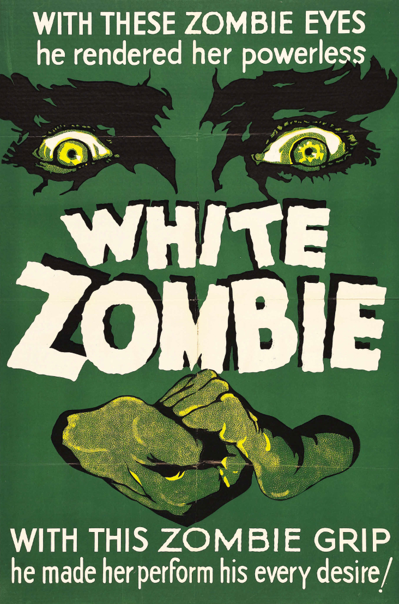
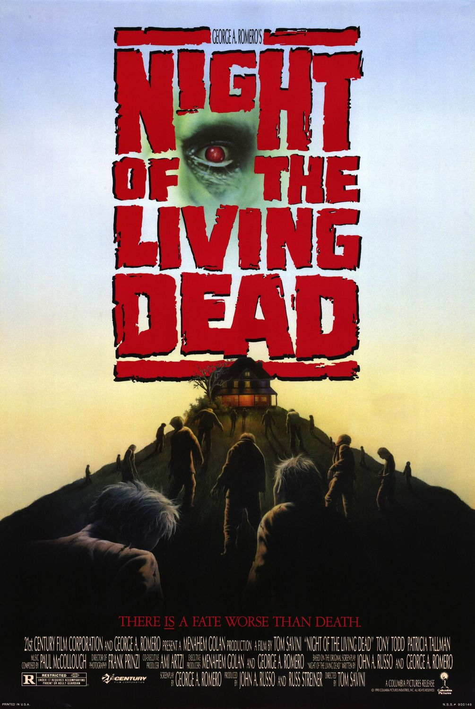
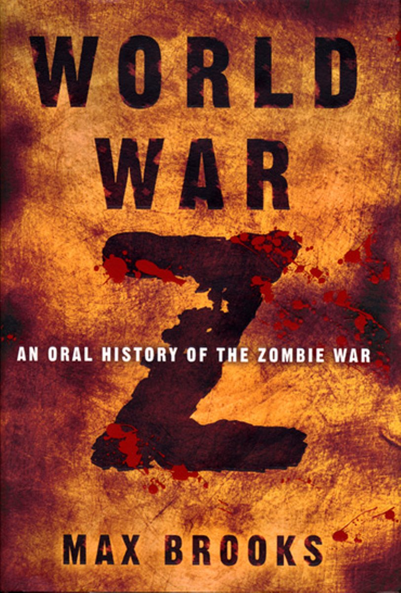

A zombie can be any formerly human (usually undead) creature that demonstrates little or no conscious thought. Without the ability to think, most versions of the modern zombie spend their time attempting to fulfill an animalistic never-satisfied hunger. But you already knew that.
The word zombie is older than the zombie itself. The earliest recorded use of the word “zombi” was in 1819 in a history of Brazil written by Robert Southey. The etymology is West African, and originates from either the word “nzambi” (for god) or “zumbi” (for fetish.) Or possibly both. References to zombie-like creatures before the 1800’s never explicitly use the word. But as you’ll see – most modern representations don’t actually use the word “zombie,” either.
During a zombie apocalypse, society collapses and is completely replaced by a group of mindless creatures with no order, no values, and no leadership – which apparently changes everything. An amorphous mass of everybody, zombies have been used to highlight major societal problems in pretty much every form of popular media.
Historical Zombies
Zombies in the Epic of Gilgamesh
The Epic of Gilgamesh contains the earliest recorded threat of a major zombie-related event. The first modern translation was not available until the 1870’s but the Epic of Gilgamesh itself dates back to sometime around the 18th century BC.
The Goddess Ishtar threatens:
Father, give me the Bull of Heaven, so he can kill Gilgamesh in his dwelling. If you do not give me the Bull of Heaven, I will knock down the Gates of the Netherworld, I will smash the door posts, and leave the doors flat down, and will let the dead go up to eat the living! And the dead will outnumber the living!
At this point the word “zombie” is never used, but the threat is clear. Do as you’re told or I will have huge numbers of dead people eat the living.
Zombies in the Bible
This passage from the bible could be interpreted as a reference to zombies:
Now this will be the plague with which the LORD will strike all the peoples who have gone to war against Jerusalem; their flesh will rot while they stand on their feet, and their eyes will rot in their sockets, and their tongues will rot in their mouth. On that day a large-scale panic from the LORD will spread among them. One person will grab the hand of another, and one will attack the other.
Zechariah 14:12
Just like in The Epic of Gilgamesh, the bible itself does not have a zombie-centric focus (depending on how you choose to read it, I guess) but the idea that people can be infected with a plague that allows them to rot and mindlessly attack one another is central to the concept of the modern zombie. There are a few other similar references throughout the Old Testament, but they’re mixed in with quite a lot of other old-time God smitey stuff.
Zombies in Haitian Folklore
In Haitian folklore, a zombie was a person raised from the dead by a Vodou witch (a bokor.) The Haitian zombie features a few major characteristics that vary drastically from the modern pop culture zombie: primarily, the undead remain under the control of their bokor indefinitely. They were an undead slave, required to do the bidding of their master forever.
This variation also means that the Haitian version of a zombie does not fit within the idea of the modern “zombie apocalypse.” Instead of a mass-extinction event, zombies were individually raised from death by a single person. Zombies did not create other zombies or feed on brains.
These stories were most likely used to threaten actual slaves. Many historians believe that it was common for slave owners on plantations to threaten zombification to keep their slaves working hard. It was threatened that they would be brought back to life to continue working if they were not obedient.
Haitian folklore focused heavily on freeing the person from their zombified state. The goal was not as simple as killing or destroying the zombie – it was important to free their soul (possibly by feeding them salt) so they could finally find peace.
Because the Haitian zombie was tied into Vodou spiritual beliefs, many of the associated stories actually related to real world practices associated with death or grieving. For example, the Guédé (a spirit of the dead in Vodou religion) Baron Samedi is responsible for carrying individuals into the realm of the dead. He is also responsible for ensuring that bodies rot in the ground to prevent the dead from being raised as a zombie.
To help ensure Baron Samedi’s favor, the family of the dead will dress in black or purple, but in extreme cases a family will provide gifts of cigars, rum, coffee, peanuts or bread to the Baron to help ensure that the deceased does not return as a zombie and safely makes the journey the underworld with the help of the Guédé.
Early Zombie Fiction
The Magic Island (1929)
Beginning in 1915, the US occupation of Haiti brought with it stories of zombies and the Vodou religion. In 1929, William Seabrook published The Magic Island. His personal account of visiting Haiti included completely over the top tales of ritual and magic (and other generally ridiculous nonsense.)
Seabrook’s accounts were not written as fiction, but the source was questionable. Seabrook was legitimately a reporter but he was obsessed with the occult. He visited Haiti with the purpose of immersing himself in the Vodou culture, and sensationalized every aspect of it. In addition to his obsession with the occult, he practiced sensory deprivation and was a known alcoholic. (He eventually committed suicide by pill overdose.)
Within the book, Seabrook dedicated 12 pages to the chapter entitled: “Dead Men Working in the Cane Fields.” This chapter is very much responsible for the eventual popularity of zombies as a whole. It is a story about, literally, dead men working in the cane fields.
The book achieved moderate success at the time and lead to a play named Zombie (an absolute failure that turned out to be somewhat important) as well as the motion picture White Zombie.
White Zombie (1932)
White Zombie, created by the Halperin Brothers (Victor directed, Edward produced) is considered to be the first feature length zombie film. It was created as a direct result of Seabrook’s book and the popularity of monster movies at the time. Bela Lugosi starred in the film, shortly after his appearance as Dracula. It was shot on the Universal Studios lot and reused sets and props from other popular monster movies that were released around the same time including Frankenstein, Dracula, and the Hunchback of Notre Dame.
As the film was based on The Magic Island, the zombies were depicted as mindless henchmen operating under the command of their master.
While not entirely popular at release, due to what was considered bad acting (many of the actors had not been famous since the silent film era) and an over-the-top storyline, the film has more recently become a cult favorite due to the modern popularity of the zombie genre. It was, however, a moderate financial success at the time, leading to a sequel in Revolt of the Zombies a few years later.
Public Domain and the Zombie Movie Boom (1930’s-1950’s)
White Zombie was the subject of a lawsuit shortly after it’s release. The creators of the less-than-successful play (simply titled Zombie) that had come out based on The Magic Island sued the creators of White Zombie for copyright infringement. The Halperin brother’s won the lawsuit, partially due to their argument that the zombie was part of the public domain. So it was – despite being popularized in media very soon before.
Zombies were among many other monsters to have several movies made in the “monster movie” style of the period. Most of the zombie movies of the 30’s and 40’s were simply bad movies about undead slaves, but some of them are worth reviewing:
- Revolt of the Zombies (1936)
- King of the Zombies (1941)
- I Walked with a Zombie (1943)
- Zombies on Broadway (1945)
- Zombies of the Stratosphere (1952)
- Zombies of Mora Tau (1957)
- Plan 9 from Outer Space (1959)
- I Eat Your Skin (1961)
- The Plague of the Zombies (1965)
The zombies from this era are not exactly the zombies we are now familiar with. These zombies were people put under a spell or in some way being controlled by a master. In many of these movies, the concern isn’t that the protagonist will be killed by zombies, but instead that they will be turned into a zombie by the master themselves. This, of course, links back to the Haitian folklore roots. Essentially, each of these films is characterized by an unfeeling monster who is being controlled by an outside force.
Some of the later films, generally into the 60’s, did introduce the “zombie as a cannibal” theme. In I Eat Your Skin and in The Plague of the Zombies (both produced by Hammer Films) the zombies required human flesh as sustenance.
I Am Legend (1954)
I Am Legend by Richard Matheson was one of the first popular examples of a society being completely replaced by an outbreak of monsters. Those monsters weren’t exactly zombies – Matheson’s monsters were actually based on vampires. The vampirism spread through a bloodborne virus that spread throughout the population.
Another distinction held by I Am Legend that seems commonplace now (but was original at the time) was that is produced a pseudo-scientific reason for the outbreak. Breaking free from the Haitian Vodou master-controlling-slave dynamic that inspired basically every single previous zombie story, I Am Legend plays with the idea that people could be wiped out and become bloodthirsty monsters due to a virus.
Much of the critical acclaim this story generated is due to the loneliness and isolation of the books main character. Utilizing the vampire-apocalypse backdrop to build sympathy for the protagonist, Matheson focuses heavily on the human element in a world where there is almost no “human element” left.
The book has inspired several adaptations, including comic books, a radio show, and some pretty good movies. Omega Man, starring Charlton Heston, stripped free most of the vampire-specific characteristics and opted to call the monsters “mutants” instead.
The monsters may have been considered vampires by the author, but since I Am Legend has influenced basically every zombie story to come after, it is still one of the most important stories on the zombie timeline. You can probably blame George Romero’s Night of the Living Dead for that.
Romero Zombies
Night of the Living Dead (1968)
Nearly every zombie film since Night of the Living Dead has credited Romero as an inspiration. Night of the Living Dead is the classic zombie film. George Romero’s low budget movie about Barbra and Ben visiting his father’s grave is the origin of the slow-moving people-eating zombie that is so popular today. All of the most common modern zombie characteristics are there. In fact, the type of zombie featured in Living Dead is commonly referred to as either the slow zombie or the Romero zombie.
Originally co-written with the not-nearly-as-well-remembered John Russo, Night of the Living Dead started out as a horror-comedy that barely resembled the finished product.
Reaching huge commercial success, especially for such a low budget film, Night of the Living Dead cemented the zombie as an undead monster that hungers for human flesh. It established other important zombie lore as well, such as the need to kill a zombie by destroying its brain.
Following backwards down the line, Romero strongly credits Richard Matheson and I Am Legend for his career-making film, saying, “I had written a short story, which I basically had ripped off from a Richard Matheson novel called I Am Legend.”
Romero used his ghouls (they’re not actually called zombies anywhere in the movie) to produce a story and imagery that shocked and amazed people in the 60’s. He claimed to have been criticizing the Vietnam War, but the greatest controversy surrounding the film was actually the censorship debate it provoked. The film, as a monster movie, was being shown in most theatres as a Saturday afternoon matinée, attracting a huge number of young people.
Premiering a month before the MPAAs rating system launched (which debuted in November of 1968,) anybody was allowed to buy a ticket. The controversy was quite severe and mainstream publications went as far as claiming that watching the movie could drive a person to cannibalism.
Yet another copyright “mistake” helped popularize use of the Romero zombie. In 1968, when the movie was released, copyright law required that a movie actually displayed a copyright notice to be considered a copyrighted work. During one of the title changes before the movie’s theatrical release, the movie’s title card was edited by the distributor and they neglected to add the copyright notice to the new title card. While they would have had the opportunity to pull the films they had distributed to re-add the copyright notice, they allowed the movies to be shown, effectively forfeiting the rights to the work. Because of this, the Night of the Living Dead and all characters held within are part of the public domain.
Among other possible names, Romero nearly titled the film “Night of Anubis,” inspired by the Egyptian god of embalming, or mummification, but few people understood the reference. Because the name would have gone over too many people’s heads, he opted to change the title. Had he decided to stick with “Night of Anubis,” the modern zombie could have just as easily become the modern mummy. Or the movie could have faded away into obscurity altogether.
Zombies in the 1970’s-1990’s
After the success of Night of the Living Dead, the “zombie movie” became a genre in itself. While much of the low budget movie wizardry performed by Romero was co-opted by the horror genre as a whole, the “Romero zombie” became pretty much the only zombie to be found in film.
This new breed of zombie film generally had a sort-of scientific basis for the zombie outbreak and featured creatures that hungered for human flesh. Slow-moving and dim-witted, the zombies power came from their huge numbers and their unrelenting pursuit. A person who was caught by a zombie was either killed, or turned into a zombie themselves.
The Night of the Living Dead spawned several sequels, but there were several other zombie films made during the 70’s as a direct result of the success of Romero’s film.
In the early 80’s the zombie genre exploded. A few zombie movies a year turned into a nonstop supply of fresh zombie content. In 1981 Sam Raimi released The Evil Dead. In 1983 Michael Jackson featured zombies in his iconic video for Thriller. In 1985 the Stuart Gordon film Re-Animator was released, based on a series of books by H.P. Lovecraft.
Notably, George Romero’s former writing partner, John Russo began releasing his own sequels. The first sequel, The Return of the Living Dead begins Russo’s own canon that is essentially another direct sequel to the original Romero film. With it’s own moderate success, the Russo “Living Dead” sequels also helped develop some of the modern zombie stereotypes. Specifically, lumbering zombies that wander around moaning “braaaaaains” and eat specifically brains instead of just eating human flesh.
While there are many notable examples from this period, the real wealth is in the huge number of zombie B-movies that exist from this time. Some examples that achieved relative success are:
- Pet Sematary (1989) – notable for the inclusion of “zombie” animals
- Peter Jackson’s Braindead (1992) (released as Dead Alive in the U.S.) – an ultra gory film that achieved cult status after the success of Lord of the Rings
- My Boyfriend’s Back (1993) – a zombie film/romantic comedy
The Modern Zombie
Zombies can now be found in every part of popular culture. Much of the most popular media relies on the slow-moving Romero-zombie as the core antagonist. Zombies also now come hand in hand with world-changing apocalyptic events.
28 Days Later (2002)
28 Days Later is another example of a zombie movie that refuses to accept it’s zombie origins. The director of the movie has argued vehemently against the film being called a “zombie movie,” but despite the fast movements and not-officially-undead status, the creatures from 28 Days Later are more similar to Romero Zombies than Romero Zombies are to their Haitian Vodou ancestors. So too bad for him.
This film is often credited with originating the concept of “the fast zombie.” While not officially undead, the monsters of 28 Days Later are victims of the “rage virus” and the sufferers are technically still alive. They run as fast or faster than regular people. They tear people apart while transmitting a virus that turns everyone else into also-not-zombies.
Resident Evil (2002)
Originally based on a popular video game of the same title, Resident Evil spawned several sequels. Surrounding the actions of the Umbrella Corporation, a pharmaceutical company that inadvertently caused the zombie apocalypse, the Resident Evil series has spawned 6 films and is currently the highest grossing film series based on a video game franchise.
When the rights to the game were originally sold, the buyer expressed interest in having Romero himself write the movie. Instead opting to go with a video-game adaption alum in Paul W.S. Anderson, the series has become incredibly successful in it’s own right. The Resident Evil series has spawned 6 films and is currently the highest grossing film franchise based on a video game.
Shaun of the Dead (2004)
Shaun of the Dead plays around with a lot of the zombie movie tropes that developed over the years. Part spoof, part homage, Shaun of the Dead is truer to the Romero zombie style than most films post-2000. The origins of the zombies are also hinted to be caused by the same thing that is hinted to have caused the zombie outbreak in the original Romero movie – an irradiated satellite falling from space.
Shaun of the Dead is a classic comedy in it’s own right, but it also becomes a pillar of the zombie genre through it’s meta-commentary on the genre. For example, when one of the characters uses the word “zombie,” they are berated for using “the zed word,” shining a light on the fact that most zombie movies avoid calling their monsters zombies.
World War Z (2006)
The book, not the movie. World War Z, by Max Brooks (and his earlier zombie book The Zombie Survival Guide) are fictional books that take the zombie apocalypse very seriously. In both books, Brooks treats the zombie apocalypse as a real-world apocalyptic event. In the Survival Guide, he is providing tips and advice on how to react during a zombie apocalypse.
With no true protagonist, the book demonstrates failings of people all around the world in controlling or containing the zombie threat. Bearing almost no resemblance to the Brad Pitt vehicle that came out a few years later, World War Z is a zombie classic in it’s own right.
Pride and Prejudice and Zombies (2009)
Taking advantage of the public domain on multiple fronts, the author of Pride and Prejudice and Zombies included pretty much the entire original work by Jane Austen and had zombies thrown in for good measure. Crediting Austen as a co-author, Grahame-Smith set his version of the classic novel in an alternate universe where zombies roam the English countryside.
The gimmick paid off, and the book created a lot of buzz before it was even released. Upon release it was met with generally good reviews. Many people praised the story for helping to make Pride and Prejudice more accessible to young people. By adding zombies.
The Walking Dead (2010)
Based on a comic series created by Robert Kirkman, The Walking Dead is a popular TV show capitalizing on the Romero zombie to build an ongoing story within an apocalyptic world absolutely filled with zombies. Due to the longer format and the persistent characters, this show plays with themes that many of the more popular zombie movies have been unable to delve into deeply. Specifically, how living in a harsh world filled with monsters can turn people into monsters themselves.